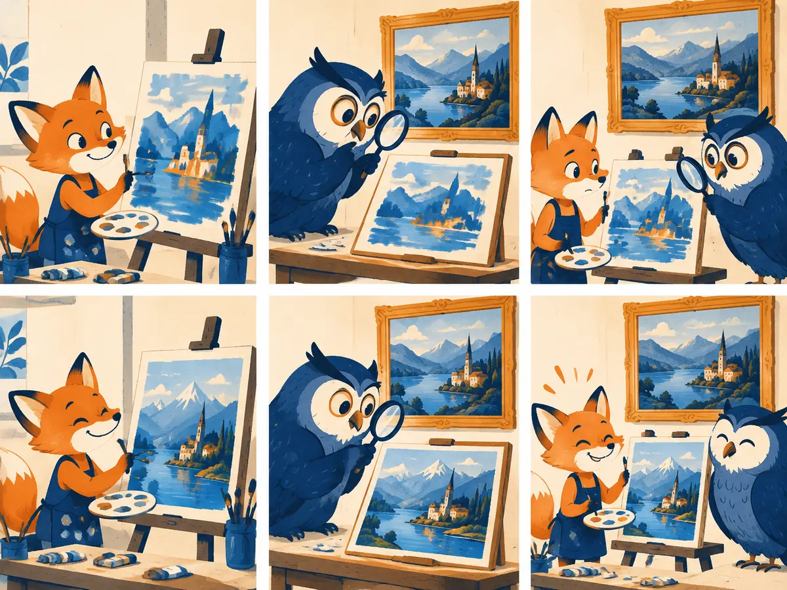

GANs
What if, instead of writing down a loss for "looks real", you trained one? A generative adversarial network pits a forger against a detective. For about five years (roughly 2015 to 2020) this game produced the sharpest images any model could make.
By the end you can
- Write the GAN minimax objective and the optimal discriminator.
- Explain why the generator uses the non-saturating loss, with numbers.
- Describe mode collapse and instability, what DCGAN, WGAN and StyleGAN changed, and where adversarial losses are used today.
Guess first; the lesson will tell you why.
In a GAN, how does the generator learn what real images look like?
- It compares each fake pixel-by-pixel with a matching real image
- Only through the discriminator's feedback: gradients of the discriminator's verdict on its fakes
- It copies random training images and adds noise
- It reads captions of the real images
A GAN trained on photos of many dog breeds only ever produces golden retrievers, all looking alike. This is called…
- Overfitting
- Vanishing gradients
- Mode collapse
- Posterior collapse
Two networks, one game, one trick
In 2014, Ian Goodfellow and colleagues ("Generative Adversarial Nets") proposed training two networks against each other. The generator $G$ turns a random noise vector $z \sim \mathcal{N}(0, I)$ into a sample $G(z)$. The discriminator $D$ takes an image and outputs $D(x)$, its probability that $x$ is real. $D$ is trained to be right; $G$ is trained to make $D$ wrong. Their objective is a minimax game:
$$\min_G \max_D \; V(D, G) = \mathbb{E}_{x \sim p_{\text{data}}}\big[\log D(x)\big] + \mathbb{E}_{z \sim p(z)}\big[\log\big(1 - D(G(z))\big)\big]$$The first term rewards $D$ for saying "real" on real data; the second for saying "fake" on fakes. $D$ maximizes $V$ (it's ordinary binary cross-entropy, sign flipped), and $G$ minimizes the second term by pushing $D(G(z))$ up. Training alternates: a few gradient steps on $D$, then one on $G$.
Goodfellow et al. showed what this game converges to in the ideal case. For a fixed generator, the best discriminator is
$$D^*(x) = \frac{p_{\text{data}}(x)}{p_{\text{data}}(x) + p_g(x)}$$where $p_g$ is the distribution of the generator's samples. Plugging $D^*$ back in gives $V = -\log 4 + 2\,\mathrm{JSD}(p_{\text{data}} \,\|\, p_g)$, where JSD is the Jensen–Shannon divergence, a symmetric cousin of KL. So the generator is, in effect, minimizing a divergence to the data, and the global optimum is $p_g = p_{\text{data}}$, where $D^* = \tfrac12$ everywhere.
Notice what is missing: no likelihood, no reconstruction loss, no blur-inducing averaging. The discriminator is the loss function, and it is learned. That's why GAN samples were so sharp.
The non-saturating trick
The minimax objective has a practical flaw. Early in training the fakes are terrible, so $D$ rejects them confidently: $D(G(z)) \approx 0$. Exactly then, the generator's loss $\log(1 - D(G(z)))$ is flat, so $G$ gets almost no gradient when it needs one most.
Goodfellow et al. suggested a fix that every practical GAN uses: instead of minimizing $\log(1 - D(G(z)))$, the generator maximizes $\log D(G(z))$, that is, minimizes $-\log D(G(z))$. Same goal (make $D$ say "real"), very different gradients. This is the non-saturating loss.
Worked example
$D$ ends in a sigmoid: $D = \sigma(a)$, where $a$ is the logit. Suppose a fake gets $D(G(z)) = 0.01$. Compare the gradient each generator loss sends back through $a$:
- Saturating: $\frac{d}{da}\log(1-\sigma(a)) = -\sigma(a) = -0.01$. A whisper.
- Non-saturating: $\frac{d}{da}\big(-\log\sigma(a)\big) = -(1-\sigma(a)) = -0.99$. A shout.
- Same direction, but $0.99 / 0.01 = 99$ times stronger, precisely when the generator is losing badly.
- At some point $x$, $p_{\text{data}}(x) = 0.3$ and $p_g(x) = 0.1$. Optimal $D^*(x) =$
- At another point, $p_{\text{data}} = 0.2$ and $p_g = 0.6$ (too many fakes there). $D^* =$
- A fake gets $D = 0.1$. The size of the non-saturating gradient through the logit, $1 - D$, is ; the saturating one, $D$, is only 0.1.
Why do practical GANs train the generator to minimize $-\log D(G(z))$ instead of $\log(1 - D(G(z)))$?
- It changes the optimum to a different distribution
- It makes the discriminator train faster
- It gives strong gradients when the discriminator confidently rejects the fakes, which is exactly early in training
- It removes the need for a discriminator
Hard to train, still everywhere
A minimax game is not a downhill slide. Each player's loss landscape moves whenever the other updates, so training can oscillate or diverge instead of converging, and success depended on careful balancing of learning rates, architectures and tricks. The most famous failure is mode collapse: the generator maps many different $z$ to the same few outputs that currently fool $D$. Nothing in the loss directly rewards covering all of the data, only fooling the discriminator, as the last step of the animation shows.
A run of papers made GANs workable:
- DCGAN (Radford, Metz & Chintala, 2015): architecture rules that made convolutional GANs train reliably: strided convolutions instead of pooling, batch normalization, ReLU in $G$ and LeakyReLU in $D$, no fully connected hidden layers.
- WGAN (Arjovsky, Chintala & Bottou, 2017): replace the classifier with a critic that estimates the Wasserstein ("earth mover's") distance, which gives useful gradients even when real and fake don't overlap. The critic must be smooth (Lipschitz): first enforced by clipping weights, then by a gradient penalty (WGAN-GP, Gulrajani et al., 2017) and later spectral normalization (Miyato et al., 2018).
- Progressive growing (Karras et al., 2018) and StyleGAN (Karras, Laine & Aila, 2019): StyleGAN maps $z$ through an MLP to an intermediate code $w$ that modulates every layer's features ("styles"), plus per-pixel noise for fine texture. Its 1024×1024 faces were, for many people, the first AI images indistinguishable from photos. BigGAN (Brock et al., 2018) scaled class-conditional GANs on ImageNet.
Quality was measured with the FID (Fréchet Inception Distance, Heusel et al., 2017), which compares statistics of real and generated images in a pretrained network's feature space; lower is better. Diffusion models later report their wins on the same metric.
Explain like I'm 5

A young fox painter wants to paint landscapes so good they could hang in the gallery. An owl inspector with a magnifying glass compares each new painting with the real ones on the wall and says "real" or "copy".
Every time the owl spots a copy, the fox learns what gave it away and fixes that. Every time the fox gets better, the owl looks closer. They both improve until the owl just shrugs: it can't tell any more.
Where it breaks: a sneaky fox might paint the same mountain over and over because the owl liked it once (mode collapse). Real GANs are not two characters taking polite turns; they are two networks nudging numbers, and sometimes they chase each other in circles forever.
Where GAN ideas live today
From about 2021, diffusion models overtook GANs for general image generation: they train stably, cover the whole data distribution instead of collapsing to modes, and scale smoothly with text conditioning (G1.3, G1.4). GigaGAN (Kang et al., 2023) showed a scaled-up GAN can do text-to-image too, but it remained the exception. As of 2026, very few leading image generators are GANs.
The adversarial loss itself, though, is everywhere, usually as a helper next to another objective:
- Autoencoder decoders. VQGAN (Esser et al., 2021) added a patch-based discriminator to a VQ-VAE so decoded images are sharp rather than blurry. The autoencoder inside Stable Diffusion (G1.4) is trained with reconstruction, perceptual and patch-adversarial losses for the same reason.
- Audio. Vocoders such as HiFi-GAN (2020) and neural audio codecs such as SoundStream (2021) and EnCodec (2022) use discriminators to make decoded sound crisp (A1.3).
- Few-step diffusion. Adversarial Diffusion Distillation (ADD; Sauer et al., 2023) trains a student diffusion model to produce good images in 1–4 steps, using a discriminator plus a diffusion teacher. It powers SDXL Turbo; similar adversarial distillation is used in other fast models (G1.5).
In which of these does an adversarial (GAN-style) loss commonly appear in 2026-era systems?
- The tokenizer of a text-only LLM
- Training the decoder of an image or audio autoencoder, and distilling diffusion models into 1–4 step generators
- Computing attention weights
- The forward noising process of diffusion
Explain to a friend how a GAN learns, and name one way the training can go wrong.
For a fixed generator, which formula gives the optimal discriminator?
- $D^*(x) = p_g(x) / p_{\text{data}}(x)$
- $D^*(x) = p_{\text{data}}(x) - p_g(x)$
- $D^*(x) = p_{\text{data}}(x) / \big(p_{\text{data}}(x) + p_g(x)\big)$
- $D^*(x) = \tfrac12$ always
What does StyleGAN's mapping network do?
- Maps noise $z$ to an intermediate code $w$ that modulates ("styles") the features at every generator layer
- Maps images to captions
- Maps the discriminator's output to a Wasserstein distance
- Maps low-resolution images to tokens
From M3.2: an RLHF policy learns to score highly on a learned reward model without actually getting better. Which GAN behaviour is most similar?
- Batch normalization in DCGAN
- The discriminator reaching $D = \tfrac12$
- Using a mapping network
- The generator exploiting a weak discriminator's blind spots, for example by collapsing to a few outputs it accepts
Why did diffusion overtake GANs for general text-to-image generation?
- Diffusion needs only one network call per image
- Its training is a stable regression that covers the whole distribution, and it scaled smoothly with data, compute and text conditioning
- GANs cannot produce sharp images
- GANs cannot be conditioned on anything
Key takeaways
- A GAN trains a generator against a learned discriminator: $\min_G \max_D \mathbb{E}[\log D(x)] + \mathbb{E}[\log(1 - D(G(z)))]$.
- The optimal discriminator is $p_{\text{data}}/(p_{\text{data}} + p_g)$; at the ideal end it outputs ½ everywhere.
- Generators use the non-saturating loss $-\log D(G(z))$ for strong early gradients.
- GANs are sharp but unstable and prone to mode collapse; DCGAN, WGAN and StyleGAN made them work.
- Today the adversarial loss lives on in autoencoder decoders, audio codecs and fast diffusion distillation (ADD).
Add this lesson's cards to your spaced-review deck.